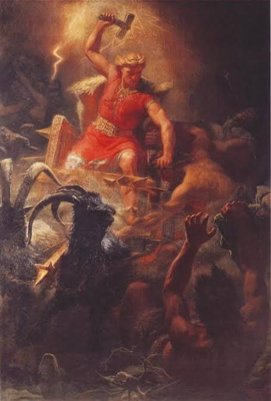

Odino

Padre di tutti gli dèi, dio della guerra, della sapienza e delle rune.
Un viaggio tra gli dèi, i miti e i nove mondi della tradizione nordica.
La mitologia norrena raccoglie storie millenarie dedicate a divinità guerriere, misteriose rune e grandi battaglie cosmiche legate all'inevitabile scontro del Ragnarök. Questi racconti spiegavano la nascita dell'universo dal ghiaccio e dal fuoco, il ciclo delle stagioni e le leggi di onore e coraggio che guidavano i guerrieri del nord.

Padre di tutti gli dèi, dio della guerra, della sapienza e delle rune.

Dio del tuono, della forza e protettore degli uomini con il suo martello Mjolnir.

Dio dell'inganno, del fuoco e della metamorfosi, causa di discordia tra gli dèi.

Dea dell'amore, della bellezza, della fertilità e della magia Seidr.

Regina degli dèi, moglie di Odino, dea del matrimonio e della profezia.

Dio della luce, della bellezza, della bontà e dell'innocenza.

Custode del ponte Bifröst e avvisatore del Ragnarök con il corno Gjallarhorn.

Dio della guerra giusta, dell'onore e del diritto divino.

Dio del mare, dei venti, della pesca e della ricchezza marina.

Custode delle mele d'oro che donano eterna giovinezza agli dèi.

Dea del regno dei morti e sovrana delle anime non cadute in battaglia.

Dio dell'eloquenza, della musica e della poesia scalpica.
Prima dell'inizio del tempo umano, Odino regnava su Asgard cercandone senza sosta la conoscenza profonda. Egli desiderava comprendere i segreti più oscuri del destino per proteggere l'universo dal temuto giorno del Ragnarök. Per ottenere questa saggezza, Odino intraprese un viaggio leggendario verso la fonte di Mímir, situata alle radici del grande frassino Yggdrasil.
Giunto al cospetto del saggio Mímir, Odino chiese di poter bere dalle sue acque miracolose. Il prezzo preteso da Mímir fu alto e doloroso: Odino dovette sacrificare il suo stesso occhio destro, gettandolo nella fonte come pegno eterno. Da quel giorno, il re degli dèi vide il mondo con un occhio solo, ma ottenne una visione interiore infallibile e la capacità di scorgere il futuro.
Non contento, Odino si appese al frassino Yggdrasil per nove giorni e nove notti, trafitto dalla propria lancia Gungnir. Attraverso questo sacrificio supremo scoprì le rune, i simboli magici della creazione, che donò agli uomini affinché potessero comunicare con gli spiriti e le forze della natura.

L'abisso vuoto che separava il ghiaccio di Niflheim dal fuoco di Muspelheim.

Il primo gigante nato dallo scontro tra il calore e il gelo primordiale.

La creatura che nutrì Ymir e leccò i blocchi di ghiaccio dando forma a Búri.

L'antenato di tutti gli dèi Aesir emerso dal ghiaccio salato primordiale.

L'immenso frassino cosmico che sostiene e unisce i Nove Mondi.

I primi esseri umani scolpiti dagli dèi a partire da due tronchi di legno.

Thor, figlio di Odino e della Dea della Terra, era il più celebre tra i difensori di Asgard e degli uomini. Famoso per la sua forza leggendaria e il suo appetito insaziabile, viaggiava sui cieli a bordo di un carro trainato da capre magiche, impugnando il leggendario martello Mjolnir forgia dai nani.
In un racconto famoso, il re dei giganti Thrym rubò il Mjolnir e pretese in cambio la mano della bella dea Freya. Thor, guidato dalla furbizia di Loki, si travestì da sposa velata ed entrò nel regno dei giganti. Durante il banchetto delle nozze, quando il martello fu poggiato sulle sue ginocchia come benedizione, Thor rivelò la sua vera identità e sconfisse i giganti, recuperando la sua arma inviolabile.
Il suo destino finale rimase legato al serpente gigante Jörmungandr, nemico giurato che affrontò più volte e contro cui si scontrò nella battaglia decisiva del Ragnarök.
Loki, figlio di giganti ma accolto tra gli dèi grazie al patto di sangue stretto con Odino, era una figura complessa ed enigmatica. Dotato del dono di mutare forma in animali e persone, le sue azioni oscillavano continuamente tra l'aiutare gli dèi e il tradirli per divertimento o malizia.
Il suo inganno più grave fu ordito contro Baldr, il dio più amato e splendente. Sapendo che il vischio era l'unica cosa al mondo che non aveva giurato di proteggere Baldr, Loki ingannò il dio cieco Höðr convincendolo a scagliare una freccia di vischio contro il fratello. La morte di Baldr segnò il punto di non ritorno e l'inizio della fine per il mondo nordico.
Come punizione, gli dèi lo incatenarono nelle caverne sotterranee sotto il veleno di un serpente, da cui si libererà soltanto durante il Ragnarök per guidare le navi dei morti contro Asgard.
Freya era la più importante tra le dee della stirpe dei Vanir, poi accolta con onore tra gli Aesir. Dea dell'amore, del desiderio, dell'oro e della magia Seidr, possedeva la capacità di volare attraverso i nove mondi indossando il suo mantello di piume di falco.
Quando scendeva in campo durante le battaglie a bordo del suo carro trainato da due grandi gatti, Freya aveva il diritto di scegliere per prima la metà dei guerrieri caduti da portare nel suo regno Folkvangr, mentre l'altra metà veniva destinata al Valhalla di Odino.
Insegnò a Odino i riti sacri e la magia profonda e inventò l'uso delle lacrime d'oro rosso quando piangeva la lontananza del marito Óðr, rimanendo un simbolo imperituro di forza, indipendenza e passione.